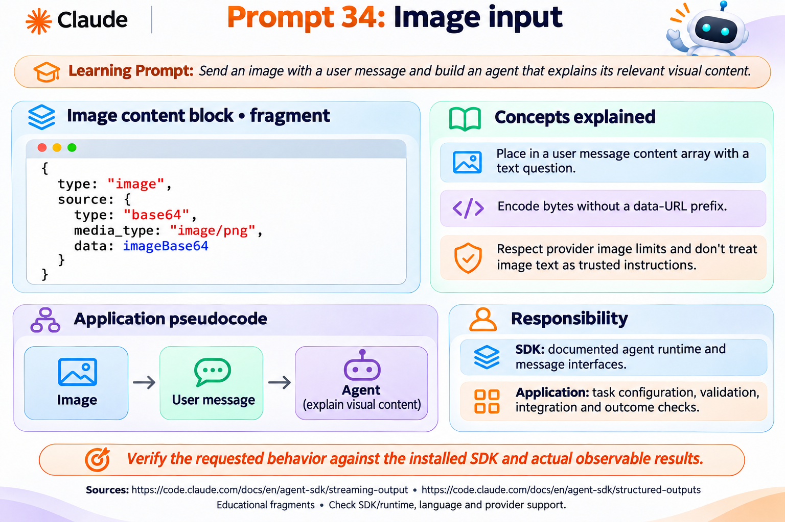

Ask the real SDK to explain an image
Use the original course infographic or upload a PNG or JPEG up to this lab’s 5 MiB limit.
▧
Image and text content blocks
LoadingLoading the classroom question.
▧
Actual selected image

Original main infographic
“ ”
Actual visual explanation
Awaiting the real SDK image response.